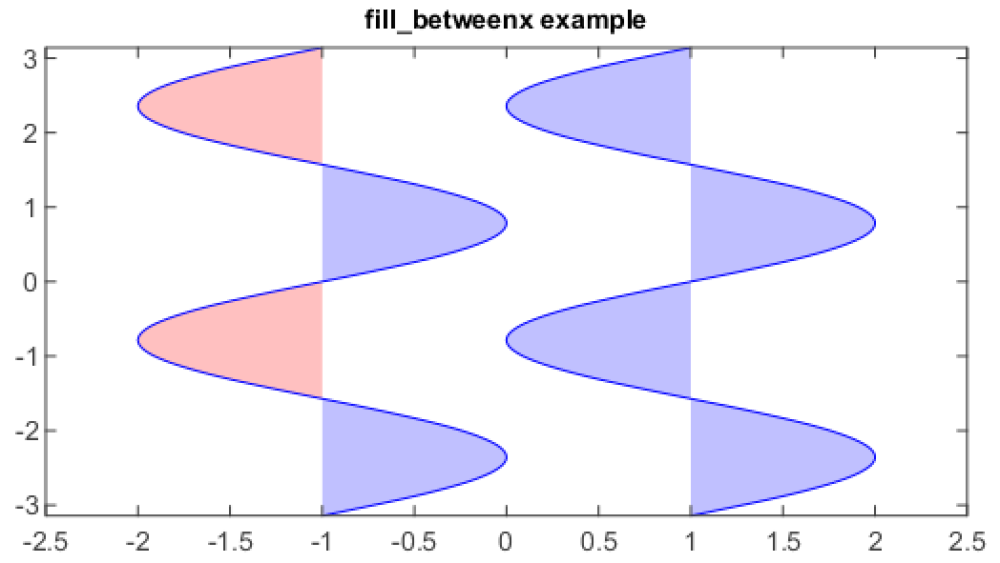

fill_betweenx¶
-
mipylib.plotlib.miplot.fill_betweenx(y, x1, x2=0, where=None, **kwargs)¶ Make filled polygons between two curves (y1 and y2) where
where==True.Parameters: - y – (array_like) An N-length array of the y data.
- x1 – (array_like) An N-length array (or scalar) of the x data.
- x2 – (array_like) An N-length array (or scalar) of the x data.
- where – (array_like) If None, default to fill between everywhere. If not None, it is an
N-length boolean array and the fill will only happen over the regions where
where==True.
Examples
n = 256 y = linspace(-pi, pi, n, endpoint=True) x = sin(2 * y) fill_betweenx(y, 1, x+1, color='blue', alpha=.25) plot(x+1, y, color='blue') fill_betweenx(y, -1, x-1, (x-1) > -1, color='blue', alpha=.25) fill_betweenx(y, -1, x-1, (x-1) < -1, color='red', alpha=.25) plot(x-1, y, color='blue') ylim(-pi, pi) xlim(-2.5, 2.5) title('fill_betweenx example')